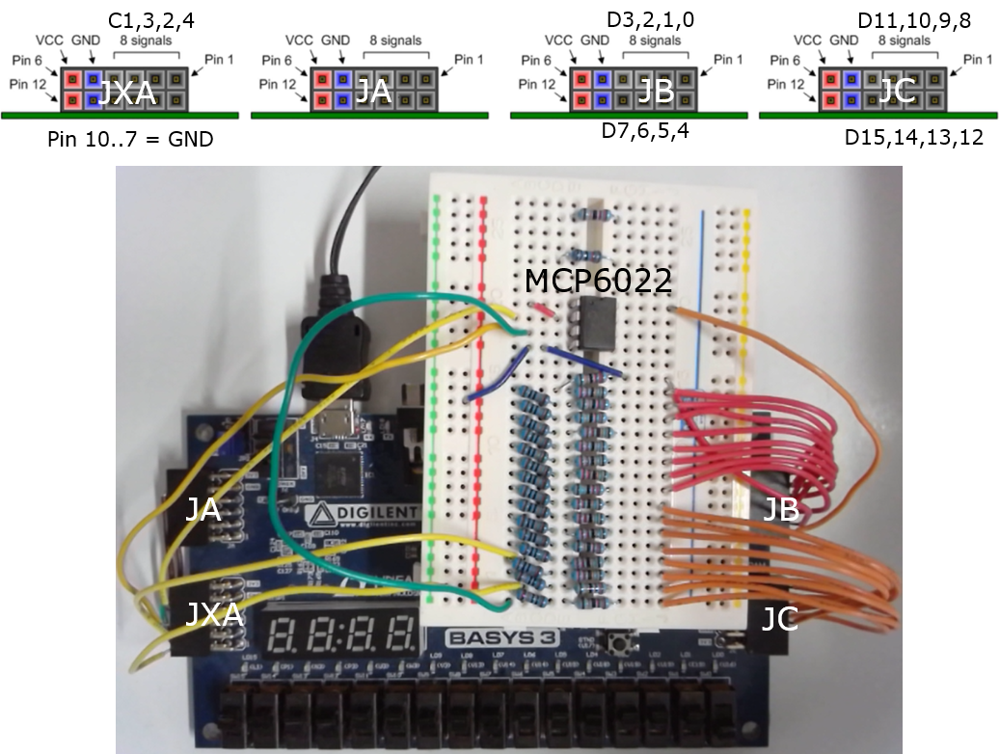
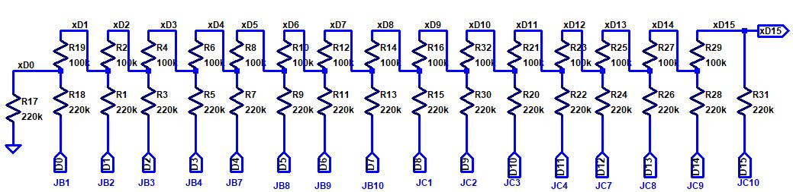
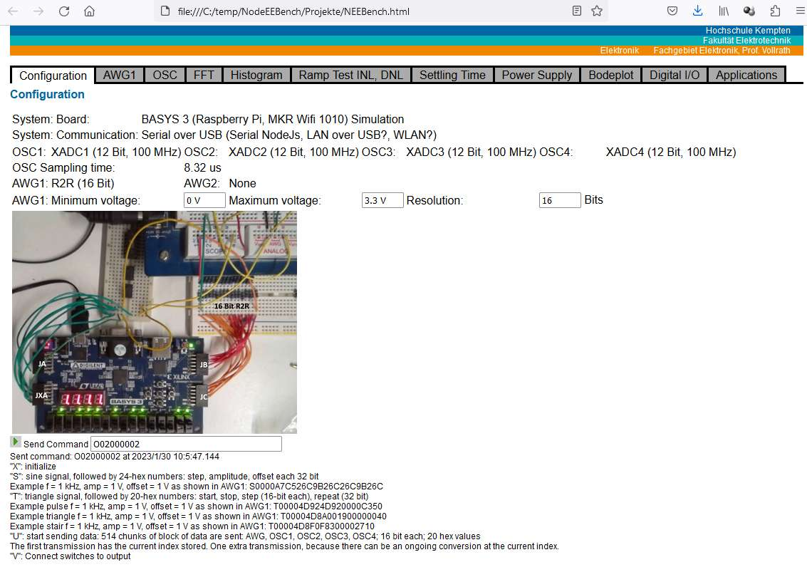
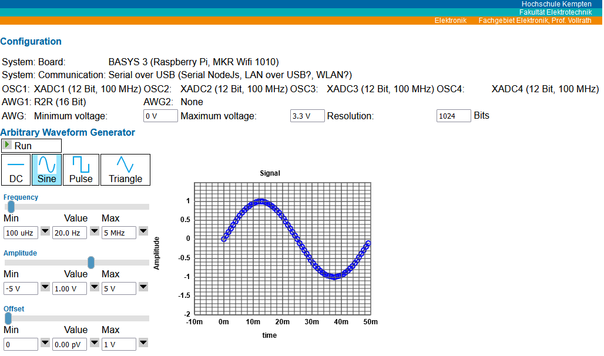
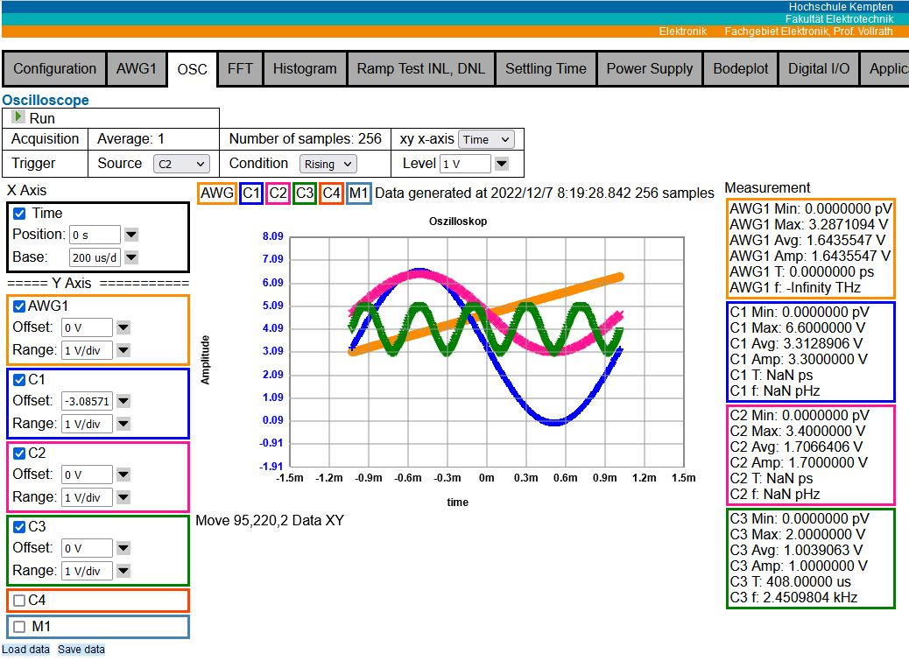
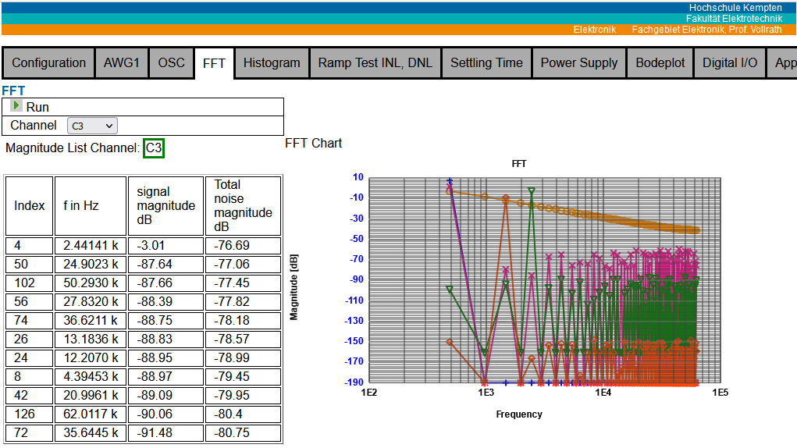
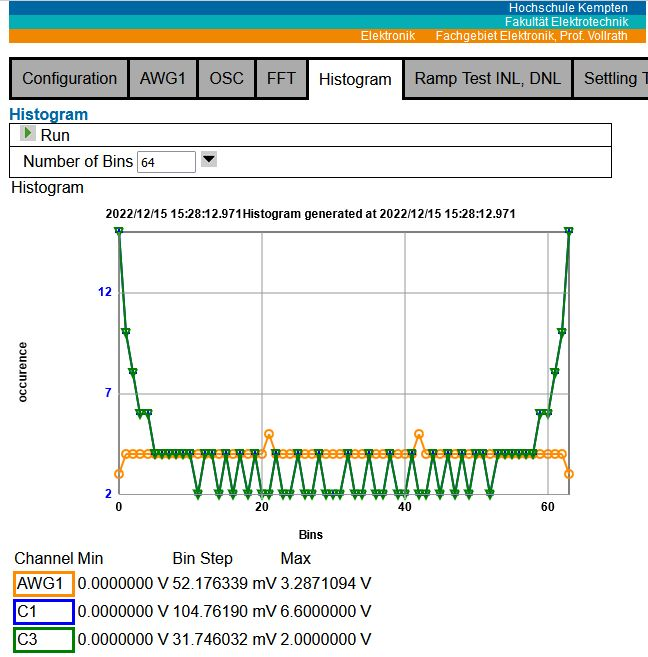

NodeEEBench with Digilent BASYS3 FPGA boardJörg Vollrath, University of Applied Science Kempten, Germany, Joerg.vollrath@hs-kempten.deMarch, 2024 OverviewHardwareSoftwareOperationSummaryTo Do List |
Hardware Installation BASYS3
The follwing picture shows the BASYS3 board using 4 XADC channels with a 16-bit R2R DAC.
For debugging purpose an oscilloscope and waveform generator can be connected.
A 16 Bit R2R DAC is built on the breadboard to supply an analog test signal for the XADC channels.

Figure: BASYS3 FPGA Board with R2R DAC and Electronic Explorer
Connections
Pins Oscilloscope:
OSC1 JXA 1 in, 7 GND;
OSC2 JXA 2 in, 8 GND;
OSC3 JXA 3 in, 9 GND;
OSC4 JXA 4 in, 10 GND;

Figure: 16 Bit R2R schematic
16 Bit R2R DAC circuit as arbitrary wavefrom generator (AWG):
Pins AWG:
JC upper 8 Bit connection: 10 (D15),9 (D14),8 (D13),7 (D12),4 (D11),3 (D10),2 (D9),1 (D8);
JB lower 8 Bit connection: 10 (D7),9 (D6),8 (D5),7 (D4),4 (D3),3 (D2),2(D1),1(D0);
R = 100 kΩ: 15 resistors between
xD0, xD1; xD1, xD2; xD2, xD3; xD3, xD4; xD4, xD5; xD5, xD6; xD6, xD7;
xD7, xD8; xD8, xD9; xD9, xD10; xD10, xD11; xD11, xD12; xD12, xD13;
xD14, xD15;
2R = 220 kΩ: 17 resistors between nodes
GND, xD0; D0, xD0; D1, xD1; D2, xD2; D3, xD3; D4, xD4;
D5, xD5; D6, xD6; D7, xD7; D8, xD8; D9, xD9; D10, xD10; D11, xD11; D12, xD12;
D13, xD13; D14, xD14, D14, xD15 (output)
16 Bit R2R DAC: left side output D15 connected to OSC1, right side D0 and GND connection.
A low voltage rail-to-rail Operational amplifier like the MCP6022 can be used as a buffer amplifier.
MCP6022: fbw = 10 MHz, VDD = 2.5 .. 5.5 V

Figure: MCP6022 Output buffer wiring
After connecting all parts and connecting the BASYS3 via USB to a Windows PC a bit file can
be loaded each time the board is powered via Vivado or a bin file can program
the onboard Flash memory. Vivado 2019.1 is used in this project.
The Xilinx project, .bit and .bin files are in the subdirectory Xilinx.
Then the board is ready for use.
Hardware Features
4 channel, 12-Bit, 125 kSps, 0..1 V range ADC oscilloscope FPGA (XADC)
1 channel, 16-Bit, 30kSps, 0..3.3 V range, 15us settling time, 100k,220k R2R DAC
8, 256, 512, 1k, 2k, 4k samples transfered via UART with Baud rate 230400
The FPGA configuration is done using the VHDL files in subdirectory Xilinx/EEBench
Software
A nodeJS server providing the user interface and serial communication is realized in
the top directory of this project with the following files:
A batch file to start the node server: NodeEEBench.bat
A nodeJS server application for communication with FPGA board and providing a user interface: ServerEEBench.js
The HTML user interface: Projekte/NEEBench.html
Some modules are needed for this project:
Chart_2013_03_11/Chart_basic.js for plotting the graphs in consistent colors
css/style.css for formatting the HTML page
FFT/dspFFT.js FFT functions
node_modules: socket.io, fs, path, express, serialport, http
This provides a user interface in the browser at localhost:3000 with the following tabs.


Figure: Configuration and signal generator user interface


Figure: Oscilloscope and FFT interface V05

Figure: Histogram interface V06
Software features:
Configuration is done with individual serial command transfer.
AWG: DC, stair, triangle and sine generator with frequency, amplitude and offset
OSC: 4 channel and AWG with 8..4096 sample selection, xy display,
voltage and code selection, rising, falling single channel trigger,
minimum, maximum, average, amplitude, period and frequency calculation.
There is voltage sample data and code data display available. A measured signal
can be directly compared to the golden AWG signal in voltage or code.
FFT: AWG1, OSC1, OSC2, OSc3, OSC4 with highest magnitude frequencies and
total noise magnitude for ENOB, SINAD, SFDR, SDR calculation.
Histogram with adjustable (16..256) number of bins.
Operation
Start: NodeEEBench.bat
Open localhost:3000 in the browser
Change to AWG1 tab and start AWG with "Run"
Watch the commands in the nodeJS command window and at the configuration tab.
Change to OSC tab and start acquisition with "Run"
A sine signal should be displayed.
Play around: Change number of samples, x-axis, unit, Trigger: source, condition and level,
change Position, base, Offset and Range
Change to FFT tab and start FFT calculation with "Run"
Summary
This system with an arbitrary waveform generator and an oscilloscope
with FFT and histogram is very low cost using a BASYS3 system for 140.- Euro (2023) and
open source with a nice user interface.
It is possible to show provided AWG and sampled OSC codes
and compare them.
Changes
- Verify oscilloscope switch between code and volt (NEEBench.html)
1.03.2024 2h O command parameters fixed, initAll implemented, y scaling FFT fixed
To Do
- Implement AWG code/voltage mode for good FFT
- Try out code based FFT and ramp
- Implement DAC INL, DNL ramp test
- Prepare for system configuration BASYS3, Arduino MKR WIFI1010 , Raspberry Pi W Zero
Batch file, system object (NEEBench.html), control and acquisition of Arduino
- Implement DAC Histogram with lookup table 256/4096
- Implement Pmod DA2 DAC at JA
- Implement 16 Bit Digital IO for JB, JC with vector and graphical user interface
- Check hardware Sine implementation since time range larger than 1ms/div gives bleeding FFT curve
1.03.2024 2h O command parameters fixed, initAll implemented, y scaling FFT fixed
Batch file, system object (NEEBench.html), control and acquisition of Arduino